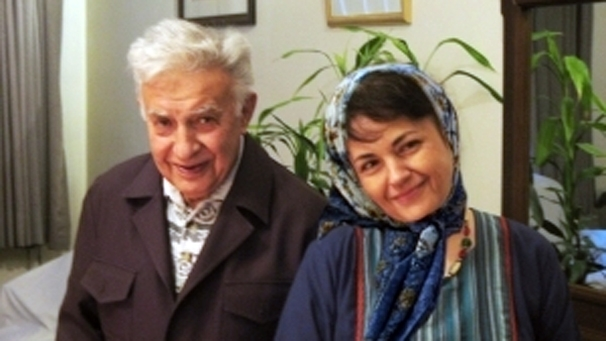

پذيرش > تریبون > مقالات > «هاله» جان، تو «زن/مادر»ی را معنا دادی/ ناهید توسلی


 «هاله» جان، تو «زن/مادر»ی را معنا دادی/ ناهید توسلی «هاله» جان، تو «زن/مادر»ی را معنا دادی/ ناهید توسلی
11 خرداد 1390 - - نسخه قابل چاپ

تغییر برای برابری/ناهید توسلی
«هاله» جان، تو «زن/مادر»ی را معنا دادی
وقتی می شنوم هاله آمده بیمارستان برای دیدن پدر، در عین این که خوشحال می شوم در این فکرم که چگونه با او روبرو شوم. شرایط جسمی مهندس سحابی نشان می دهد امیدی به دوباره دیدنش نیست. پله ها را تا طبقۀ دوم، بخش «آی سی یو» بیمارستان پارسیان، با اضطراب بالا می روم. در میان جمعیتِ دوستان و آشنایان و دوست داران پدر، می بینمش. پاهایم کشیده نمی شود. چشم های مان که به هم می افتد می گوید:
«ناهید خانومِ ما... مادر صلح...»
تنها می توانم دست در گردنش بی اندازم. انگاری زبانم قفل شده است. سرم را بر شانه اش می گذارم و می گریم! سرم را از شانه اش بر می دارد. ته چشم های اش، نمی از اشکِ مانده از روزها پیش را - شاید - پنهان می کند. طاقت نمی آورم این همه بردباری را، انگاری کوهی در مقابل ام. تاب نگاه در چشم هایش را ندارم. دو باره در آغوشش می گیرم و می گریم. کلام در ته حلقم قفل شده است. سرم را از شانه هایش برمی دارد، اشک را از گونه هایم پاک می کند. آوایی نرم می شنوم، انگاری من پدری «در کُما» در بستر دارم. با لبخندی شیرین می گوید: «یادته بابا توسلی تو... من هم بابا....» بقیه حرفها را دیگر نمی شنوم. به سرعت روی مبل طبقۀ دوم ولو می شوم، بی که کجا هستم، دست هایم را روی صورت می پوشانم و با بغضی سنگین اشک هایم را فرو می دهم.
رو به شرق می رویم. شش بعدازظهر روزی از خرداد، دهمین روز.
رو به شرق که می روی، آن هم در بعدازظهر، دیگر آفتاب چشم را نمی زند. رو به شرق که می روی، روبرو زیباتر است. نور خورشید – نه، دوست دارم بگویم نور آفتاب، - که از پشت یعنی از غرب می پاشد، روبرو را روشن تر و دیدنی تر می کند.
سرفه هایم بیشتر شده اند. باید تحریک عصبی نشوم. اشک هایم را از چشم هایم با دست پاک می کنم.
به نزدیکی میدان لواسان می رسیم، و چه زیبا شده است این روستای کوچک نزدیک تهران، که فردا مادر خاک، این بانو ایزد جاودانه، «سپندارمد»، می خواهد ابر انسانی از تبار «قرآن» و «اسلامِ» روزآمد را در آغوش خویش بازپس گیرد. نسیمی خنک می وزد، برگهای درخت گیلاس و گوجه را که در باغستان کوچک زیستی «سحابی»، چه زیبا و شکوهمند اینک بر پیکر در پرچم ایران پیچیدۀ این نماد شرافت که در زیر سایه زار خود آرام خفته است، می وزاند.
«هاله تو خیلی بزرگی».
دیشب اما، دستهایم را که حلقۀ گردنش کرده ام برمی دارد و می گوید: «ببین، ببین من چقدر بزرگ شده ام، ببین چقدر گنده شده ام!» برای چند لحظه به چهره اش چشم می دوزم، به چشمهایش خیره می شوم... قلبم تیر کشید. چیزی در قبلم میچِلّد... از خود می پرسم: «آیا این همان هاله است!». حس می کنم انگاری در خویش نیست. انگاری... کسی دیگر شده ست! گونه هایش را می بوسم، اشکهایم را، این بار خودم، با گوشۀ شال سیاهی که بر سر دارم پاک می کنم. به سرعت از اتاق بیرون می زنم. در حیاط، درختهای گیلاس و گوجه، شاخه هاشان را چنان سخاوتمندانه بر پیکر «عزت»مان گسترده اند که بوی آسمان بالای سرم را حس می کنم. از پلۀ کوتاهی بالا می روم، روی ایوان. زیر درخت گیلاس، روی زمین، کنار تختی که این مرد بزرگ روی آن خفته است می نشینم.
خاطره هایی مغشوق و نامنظم – مانند اکنونِ ذهن ام - از بیست سال دوستی و آشنایی مان با او را ذهن ام به یاد می آورد... نسیم، باز هم به همان آرامی و خنکی می وزد و باز هم برگهای سبز و شاداب، درخت گیلاس و گوجه را می رقصاند.
چشم هایم می سوزد... خوابم می برد...
شب نوروز 86 است، آخرین سه شنبه جلسۀ خوانش و تفسیر و تاویل قرآن مان با هاله و مینو تا پس از پایان نوروز. ساعت 10 صبح که در را باز می کنم هاله با گلدان بزرگ گل بنفش نوروزی وارد حیاط می شود. این همه گرم و سرشار از محبت...
بحثها همیشگی مان آغاز می شود... نزدیک به دوسال...
 هاله من نمی دونستم تو این همه در قرآن روی مسایل زنان کار کردی؟ هاله من نمی دونستم تو این همه در قرآن روی مسایل زنان کار کردی؟
درست میگی هاله... منم نظرم همینه! منظورِ قرآن همون یک زن است... اصلاً تعلیق به محال کرده این آیه قرآن، ازدواجِ بیش از یکی را، می دونی؟ یعنی میگه، اون آیه آخرای سوره، همون یکی را بیشتر نمی تونن بگیرن... اصلاً می دونی اون آیه آخر سوره دوباره بر می گرده به اصل موضوع چهار همسر و میگه:
شما نمی تونین عدالت رو...
جزوه های جلسات قرآن مان رو با خط خوش برام نوشت و آورد...
امروز، با بعض گره خورده در گلو جزوههای هاله را تورق می کنم و بخش بخش هایی از آن را می خوانم:
... دربارۀ خلقت انسانی به خلقت بشر و یا خلقت شما (خلقناکم و خلقناهم) نیز اشاره شده است....
... پنج آیه آفرینش انسان از خاک وُ گِل و...
... نُه تای دیگر دربارۀ آفرینش مرحله ای و تکاملی از ....
... آدم به صورت یک سمبل و یک مقام به ملائکه معرفی شده است و علم او به اسماء....
... پس شیطان آن دو را دربارۀ آن (درخت) منحرف نمود....
... در هنگام فریب خوردن نیز آن دو تن آدم و همسرش همه جا در کنار هم هستند و همۀ ضمائر به صورت مثنی (دونفره) است...
... هبوط آدم و زوجش از بهشت تسرّی می یابد به همه انسان ها. این جاست که سمبلیک می شود. مثل آنکه تجربۀ فریب شیطان برای همۀ انسان ها تکرار شده است و همگی...
... موجودیت آدم در بهشت: بازهم در این بخش ضمایر دو نفره و مثنی به کار رفته است...
نزدیک دوسال هردو سه شنبه یک بار ده صبح، شادمان از دیدارش، تفسیر و تاویل های مان را با هم و با مینو کَل کَل می کردیم. در میانه بحث و گفت و گوهای جدی، به مناسبت هایی که مثلاً مربوط به ازدواج چهارگانه مردان یا صیغه و این حرف ها که می شد، نکته های خنده دار و بامزه ای می گفت. آنقدر جوک های جالب و نکته دار که خستگی بحث های گه گاه سنگین را از ذهن به در می بُرد.
هر وقت اصطلاح زن/مادر را به کار می بردم، نگاهی عمیق به من می انداخت و میگفت تو این زن/مادر را ول نمی کنی؟ می گفتم هاله، تو خودت قبول نداری که یک زن/مادر نمونه هستی؟
مغزم بیش از این نمی کشد.
بیش از این توانم نیست تا از هاله بگویم، از انسانیتِ زن/مادری که نماد عطوفت و بردباری بود، همان بردباری و صبوری یی که از پدر به میراث برده بود، و پدر از آموزه های اسلامی. هاله نماد فروتنی و مهربانی بود، آن چنان مهربان که انگاری مادرِ همۀ «باشندگان» است. هیچ گاه، هیچ کس او را در شکلی از خشونت – در بدترین شرایط – ندیده بود، آن سان که پدر را، عزت ما را در بدترین شرایط هیچ کس ندیده بود که صدایش بلند شود.
هاله، پنداری به عالم و عالمیان «ایثار» بدهکار بود. آرامشی سخت آرام دهنده داشت. در جلسات مادران صلح، فروتنانه بر زمین می نشست و با مهری آنقدر آرام و دوست داشتنی، که نمی دانستی درونش چه غوغایی ست. غوغای جستجو در آیات قرآن، برای اثبات برابری زن و مرد، هم در آفرینش شان و هم در زندگی شان.
هاله، تحصیلات دوران دبیرستان تا مقطع سیکل اول را در ژاندارک تهران و سپس در دبیرستان هشترودی ادامه داد. او دانش آموختۀ فیزیک از دانشگاه تهران بود.
هاله سحابی با تسلط به زبان فرانسه، چندین کتاب ترجمه کرده است. او مطالعات بسیاری در حوزۀ قرآنی داشت و در رابطه با حقوق زنان پژوهش های زیادی انجام داده است. بخشی از این پژوهش را در سی امین سالگرد یادمان زنده یاد دکتر علی شریعتی در حسینیه ارشاد در تاریخ 29 خرداد 1386 ارائه داد.
باز هم می بایست از هاله بگویم، اما اندوه ام از پرپر شدن هاله بیش از این ام امان نمی دهد...
باشد فرصتی دیگر...
هاله جان، دیشب که با تو خداحافظی می کردم اصرار کردی شام بمانم... گفتم که باید بروم... کاش مانده بودم... کاش مانده بودم... آمدم اما تا صبح بارها و بارها خوابهای آشفته می دیدم و تا هنوز دارم در آشفتگی ام دست و پا می زنم. می خواهم بگویم دوستت دارم:
«هاله» تو «زن/مادر»ی را معنا دادی!
ارسال به
بالاترین
،
توییتر
،
فریندفید
،
فیسبوک
در همين بخش :
 دهمین دورۀ مراسم تندیس صدیقه دولت آبادی ۱۳۹۲ دهمین دورۀ مراسم تندیس صدیقه دولت آبادی ۱۳۹۲
کارت پستالهایی به بهانهی هشت مارس و به یاد همهی مبارزین راه برابری
بیانیه بیش از 350 تن از مدافعان حقوق زنان به مناسبت روز جهانی زن؛ زنان هر روز فرودستتر میشوند
لباسی که برای تن ما دوخته اند! /اعظم بهرامی
چالشها و چشمانداز فعالیت مدنی زنان
ديگر بخش ها :
طرح یک میلیون امضا
|
مقالات
|
سایت نوشته ها
|
اخبار
|
گزارش كمپين
|
گفت و گو
|
علیه سکوت
|
كوچه به كوچه
|
نامه های شما
|
گزارش ویژه
|
گفتگو با اعضا
|
ویژه سالگرد کمپین
|
تصویر برابری
|
دل آرام علی
|
تریبون
|
مقالات
|
تاریخ شفاهی
|
خارج از چارچوب
|
کتابخانه
|
درباره کمپین
|
کمپین در شهرها
|
کمپین در بند
|
صدای تغییر
|
ویژه 22 خرداد
|
لایحه حمایت از خانواده
|
گالری
|
عشا مومنی
|
امیر یعقوبعلی
|
خدیجه مقدم
|
راحله عسگری زاده و نسیم خسروی
|
پروین اردلان،جلوه جواهری، مریم حسین خواه، ناهید کشاورز
|
زینب پیغمبرزاده
|
سعیده امین، سارا ایمانیان، محبوبه حسین زاده، ناهید کشاورز و همایون نامی
|
احترام شادفر
|
نسیم سرابندی زاده،فاطمه دهدشتی
|
وبلاگ مهمان
|
پرونده خرم آباد
|
دستگیری ها
|
مریم مالک
|
پرستو اللهیاری
|
مهرنوش اعتمادی
|
سمیه رشیدی
|
Other Languages
|
همراهان
|
«فراخوان کمپین ده روز با بهاره هدایت»
| English
|